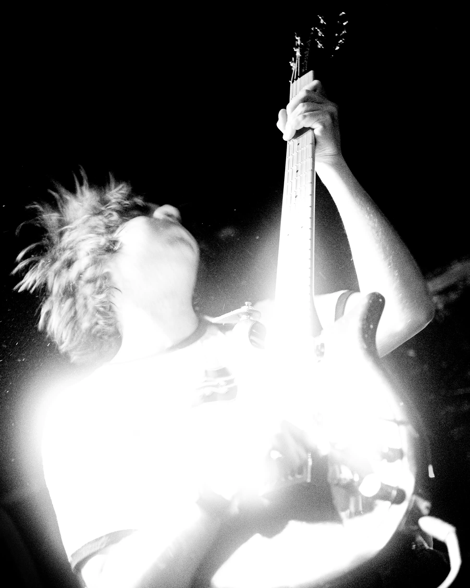

Rats Will Feast is an experimental hardcore outfit from Jyväskylä, Finland, crafting a musical landscape of extreme aggression, unyielding emotion and hallucinatory chaos. Active in its current form since 2018, the band has built a reputation for intense live performances and innovative sound. The bands earlier releases Scarcity (LP, 2019), Songs of a Racehorse (EP, 2020), and Malady (2021) move fluidly between crushing hardcore and noisy psychedelia, occasionally dwelling in more mellow post-rock atmospheres. Their 2024 album Hellhole pushed the band’s signature sound to its extremes, delving further into destructive chaos, aggression and desolation. Rats Will Feast’s latest release, An Evocation (EP, 2026) continues their evolution, standing as their most focused and defined musical expression and proving that the band shows no signs of slowing down.
”An Evocation" celebrates Rats Will Feast's diverse and imaginative interpretation of modern metallic hardcore. While the being is deeply rooted in the bands core sound developed over the last 10 years, “An Evocation” refines and expands the bands sound into new unexplored forms. Crushing and extreme, yet intensely melodic and experimental, the album’s sound is a forceful expression of unrelenting hardcore with unyielding emotion.
Rats Will Feast is forever.
Members:
Ruben/Guitar, vocals
Joona/Guitar, vocals
Konsta/Bass, vocals
Aaron/Drums, vocals